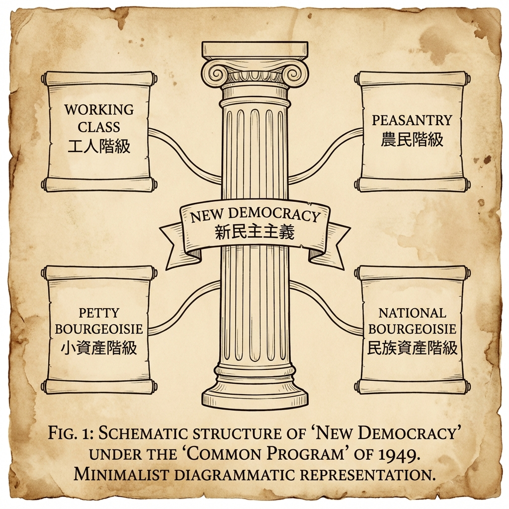

AD 1949
共同纲领：新中国的临时宪法
《中国人民政治协商会议共同纲领》（简称《共同纲领》），是1949年9月29日由中国人民政治协商会议第一届全体会议通过的重要文件。在1954年《中华人民共和国宪法》颁布以前，它在我国起临时宪法的作用。它凝结了中国共产党和各民主党派、各人民团体及各界爱国人士的智慧，确立了新中国的建国方略。

Schematic Visualization
深度解析
I. 核心内容：定义新中国
《共同纲领》共7章60条，明确了新中国的国家性质、政权组织形式以及各项基本政策。
- 国家性质： “中华人民共和国为新民主主义即人民民主主义的国家，实行工人阶级领导的、以工农联盟为基础的、团结各民主阶级和国内各民族的人民民主专政。”
- 人民权利： “人民有选举权和被选举权”，“有思想、言论、出版、集会、结社、通讯、人身、居住、迁徙、宗教信仰及示威游行的自由权”。
- 经济政策： 实行公私兼顾、劳资两利、城乡互助、内外交流的政策，保护工人、农民、小资产阶级和民族资产阶级的经济利益。
- 外交政策： “保障本国独立、自由和领土主权的完整，拥护国际的持久和平和各国人民间的友好合作，反对帝国主义的侵略政策和战争政策。”
II. 历史特点：广泛的共识
《共同纲领》是中国共产党与各民主党派及各界人士经过反复协商、充分讨论后制定的，它最大程度地体现了当时中国社会各阶级的共同意志，是统一战线的伟大成果。它虽然不是正式宪法，但具有法律效力，是中央人民政府和地方各级人民政府的施政纲领。
III. 历史意义：法治的开端
《共同纲领》的通过和实施，标志着中国人民在政治上获得了翻身解放，确立了新中国的法治根基。它为新中国的成立和初期的各项建设提供了法律依据，直到1954年第一部社会主义宪法诞生，它才完成了历史使命。
历史影响
临时宪法作用
作为建国纲领，它在建国初期起到了临时宪法的作用，对于稳定政局、恢复经济发挥了不可替代的作用。
确立国体政体
它第一次以法律形式明确了人民共和国的国体和政体，为后来的宪法制定提供了蓝本和经验。
凝聚民族力量
它不仅是各党各派的政治契约，也是凝聚全民族力量共同建设新中国的行动指南。